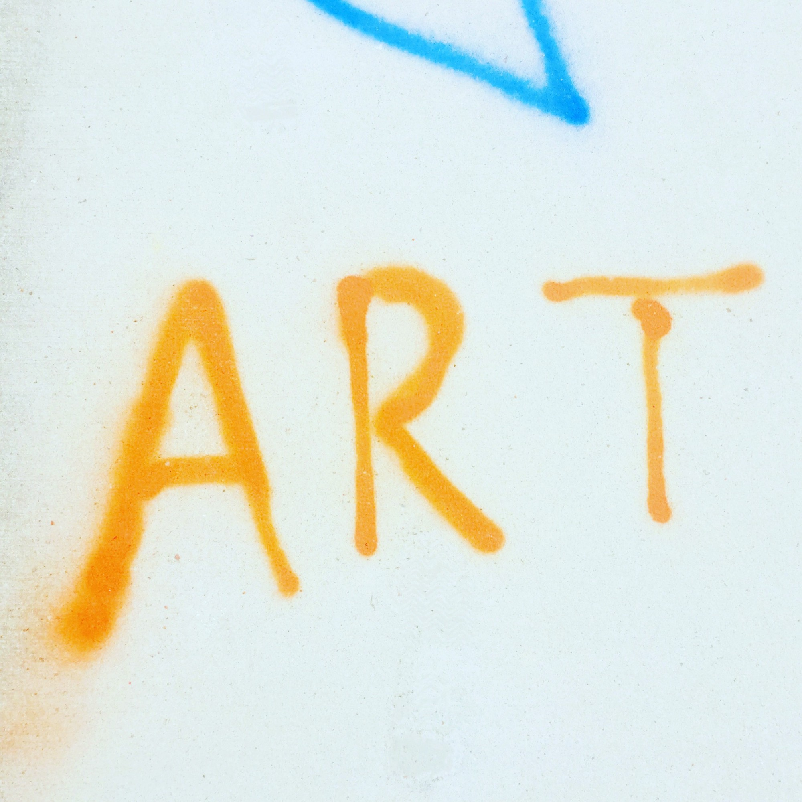
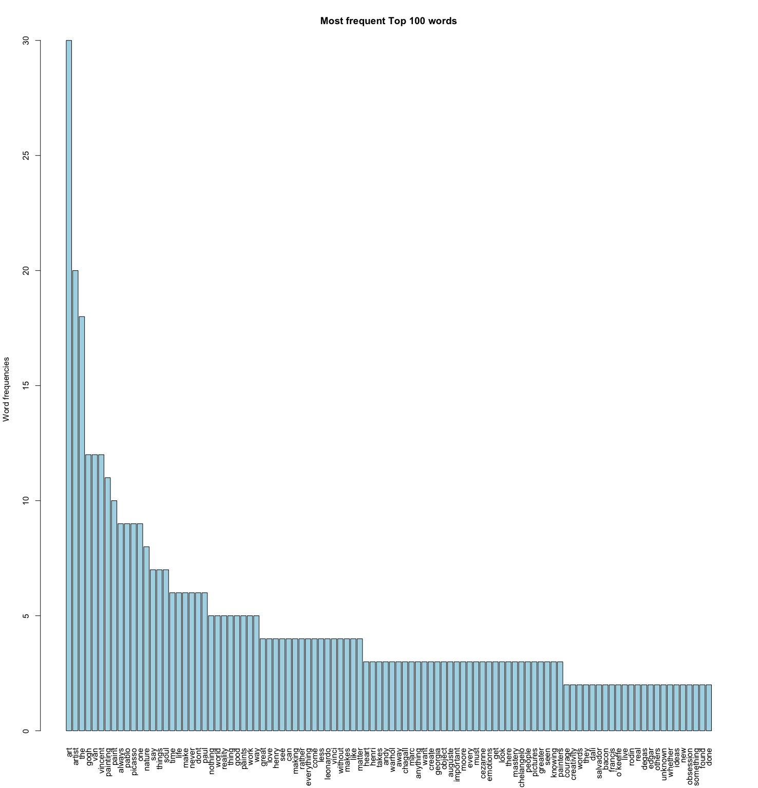
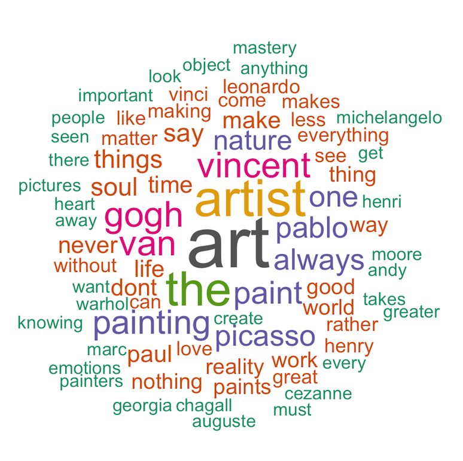
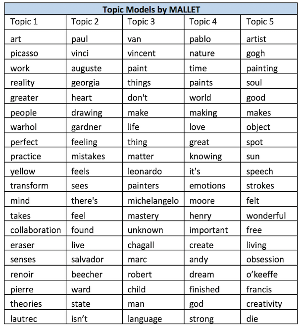
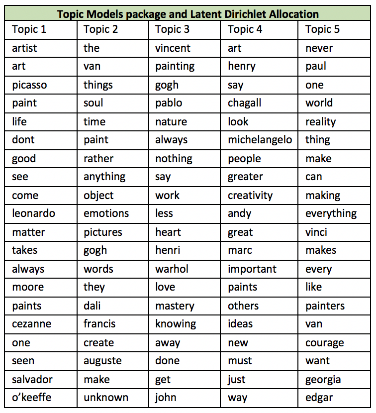
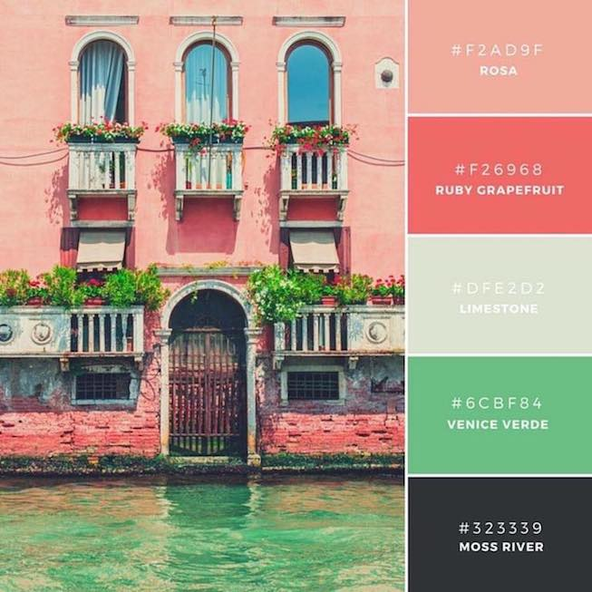
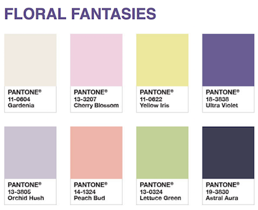

I've been defining different terms such as happiness and artificial intelligence(AI) throughout this semester and I believe that a crucial term in this class is "art." I wanted to explore the definitions of "art" from quotes from various artists. I found 99 quotes from famous artists defining "art." The concept of this piece is to define the vague term and understand the meaning of "art." Art will also be expressed and created through the user in the other sketch which is on the same tab.
Art is perceived differently to everyone. People have different interpretations of art and the meaning of art can vary greatly such as fairy tales are read differently from every child.
“As with all great art, the fairy tale's deepest meaning will be different for each person, and different for the same person at various moments in his life. ”by Bruno Bettelheim, The Uses of Enchantment: The Meaning and Importance of Fairy Tales
Two methods are mainly used for this piece. The first is text mining methods and the second is using p5.js for interactive graphics. I used various approaches in text mining.
1st Step: Obtaining Data
The data set I used was the 99 Inspirational Art Quotes from Famous Artists.2nd Step: Text Cleaning and Exploratory Data Analysis with R


library(tm)
library(SnowballC)
library(wordcloud)
library(RColorBrewer)
barplot(d[1:100,]$freq, las = 3, names.arg = d[1:100,]$word,
col ="lightblue", main ="Most frequent Top 100 words",
ylab = "Word frequencies")
set.seed(1234)
png("wordcloud.png", width=12,height=8, units='in', res=300)
par(mar = rep(0, 4))
wordcloud(words = d$word, freq = d$freq, min.freq = 3,
max.words=100, scale=c(3, 0.5), random.order=F, rot.per= 0,
colors=brewer.pal(8, "Dark2"))
3rd Step: Topic Modeling with Mallet and LDA
Why am I using five topics?
George A. Miller states that human’s memory capacity can obtain from five to nine objects at once. As a result, I want people to capture in a short time that five topics existed and have the overall sense of what each topic is representing.
Results of Topic Modeling with Mallet

Results of Topic Modeling with LDA

##Run Latent Dirichlet Allocation (LDA) using Gibbs Sampling
#set burn in
burnin <-1000
#set iterations
iter<-2000
#thin the spaces between samples
thin <- 500
#set random starts at 5
nstart <-5
#use random integers as seed
seed <- list(254672,109,122887,145629037,3)
# return the highest probability as the result
best <-TRUE
#set number of topics
k <-5
#run the LDA model
ldaOut <- LDA(dtm, k, method="Gibbs", control=
list(nstart=nstart, seed = seed, best=best, burnin = burnin, iter = iter, thin=thin))
terms(ldaOut, 20)
ldaOut.terms <- as.matrix(terms(ldaOut,10))
#view the topic assignment for each document
topics(ldaOut)
#create a matrix and write to csv
ldaOut.topics <-as.matrix(topics(ldaOut))
write.csv(ldaOut.topics,file=paste("LDAGibbs",k,"DocsToTopics.csv"))
#Find probabilities associated with each topic assignment
topicProbabilities <- as.data.frame(ldaOut@gamma)
write.csv(topicProbabilities,file=paste("LDAGibbs",k,"TopicProbabilities.csv"))
#investigate topic probabilities data.frame
summary(topicProbabilities)
str(topicProbabilities)
4th Step: Visualize Data with p5.js
Network clouds are created with p5.js and the codes are explained later in the writing.
5th Step: Interaction and Interpretation by Users
The topic modeling results do not make a lot of sense and this is the limitation of topic modeling. Art is also defined with various words and ultimately the defining art is up to the user. The user may agree or disagree with the five topics and they will also have the opportunity to express their thoughts in the second piece.
The piece includes two sketches. The first one includes the five topics of the definition of art from the 99 quotes. The network word cloud will work with the webs. The interaction is seeing the sketch. When the mouse is on top of a topic, one of an image from an artist in the topic will be shown. The second one enables users to draw whatever they want with three pantone colors to define art. Different colors of strokes can be used for the drawing. With a large screen, people will be able to see the texts and the images closely. The intended user for the piece are people who are interested in art. The users receive information of art and also express art on their own. Various interactions with the piece allows users to better understand the meaning of art and how it is challenging to define art overall. Interacting with the text information and being able to paint with strokes which is abstract drawings are requiring the users to interact with the concept of art in different approaches. The user uses different methods and they will be able to contemplate what art means.

Ruby Grapefuit: #F26968, color(242,105,104)
Limestone: #6CBF84, color(223,226,210)
Moss River: #323339, color(50,51,57)
Color Selection PANTONE (2018)

Ultra Violet: color(140, 109, 211)
Peach Bud: color(253, 122, 131)
Lettuce Green: color(53, 204, 153)
Being inspired by Chagall’s quote, Joey Pecoraro’s “Ask for Love” is used.
“Art must be an expression of love or it is nothing.”by Marc Chagall
Joey Pecoraro’s “Give Me Something” is used because the sketch is asking for a definition of art from the user. “Give me something (that defines art)!”
Do you intend to extend a piece that you've created throughout the semester? What elements are you adding or subtracting from the previous piece? How do these extensions/subtractions further develop the conceptual and interactive elements of your work?
I am extending my piece from second and third piece. First of all, I am using text mining methods for the piece with R, Mallet, and LDA for exploratory data analysis. I used the results of the topic modeling. Secondly, I am using the pantone colors in the second sketch for the user to create their own art which I have used in both previous works. The elements that are adding to the previous works are the second sketch for user interaction for defining art and images of artists popping up when the mouse is clicked.
Libraries p5.dom.js p5.sound.js
Hosting Platform Jo's ART
Explanation of your codebase
Load Data The table of the data is loaded into p5.js.
Load Sound The short sound clip by Joey Pecoraro's Ask For Love is loaded.
Load Font Typewriter font is loaded on p5.js.
Clusters and nodes Daniel Shiffman's The Nature of Code's physics libraries were used for creating clusters and nodes.
Mouse Is Pressed When mouse is pressed, the image appears on the screen.
function preload(){
//data
table = loadTable('data/.csv', 'csv', 'header');
//music
soundFormats('m4a');
mySound = loadSound('sound/askforlove.m4a');
//font
fontItalic = loadFont('images/typewriter.ttf');
}
function loadData(){
//Access the fields via their column name (or index)
//var keyword = row.get("keyword");
ONE = table.getColumn("ONE");
TWO = table.getColumn("TWO");
THREE = table.getColumn("THREE");
FOUR = table.getColumn("FOUR");
FIVE = table.getColumn("FIVE");
console.log(ONE);
}
function draw(){
//Update the physics world
physics.update();
background(50,51,57); //moss
// Update the physics world
physics.update();
// Display all points
if (showParticles) {
cluster.display();
cluster2.display();
cluster3.display();
cluster4.display();
cluster5.display();
}
// If we want to see the physics
if (showPhysics) {
cluster.showConnections();
cluster2.showConnections();
cluster3.showConnections();
cluster4.showConnections();
cluster5.showConnections();
}
if (mouseIsPressed) {
image(img, 0, 0, img.width/1.3, img.height/1.3);
//text
textSize(40);
var s = '“I want to touch people with my art.”';
fill(223,226,210);
text(s, 430, 0, 400, 400);
}
}
Libraries p5.dom.js p5.sound.js
Hosting Platform Jo's ART
Explanation of your codebase
Load Sound The short sound clip by Joey Pecoraro's Give Me Something is loaded. This song is chosen to tell the user to give me something that defines “art.”
Key Pressed This enables the users to change colors of their color strokes between R(peach), G(lettuce green), and P(purple).
function mouseDragged()
{
strokeWeight(10);
stroke(c);
line(mouseX, mouseY, pmouseX, pmouseY);
}
function keyPressed()
{
if(key == 'r' || key == 'R')
{
c = color(253, 122, 131);
}
if(key == 'g' || key == 'G')
{
c = color(153, 204, 153);
}
if(key == 'p' || key == 'P')
{
c = color(140, 109, 211);
}
}